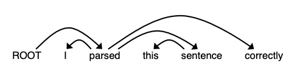
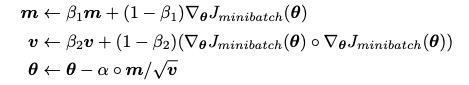

句法分析是个历史非常悠久的NLP课题，但是也不是太好理解，而且有很多依赖于语言学的内容，这里简单介绍一下 Dependency Parsing(依存句法分析) 以及最近一些结合deep learning 来做句法分析的工作
通过Stanford CS224N 课程来讲解这一课题
句法分析手推过程
每一步保留三个结构
- stack: stack 存着目前正在处理的words
- buffer: buffer 存着目前尚未处理的words
- dependencies: 通过parser预测得到的dependencies
初始状态下，stack 是空的， buffer是满的。
在每一步，都可以应用一种transition， 一共有三种类型的transition会被操作
- SHIFT: 将buffer的第一个item 从buffer 移动到stack 中去
- LEFT-ARC: 将stack 的第二个item 标记为依赖于 stack 的第一个item, 并且将stack 中的第二个item 从stack 中删除 得到一组依存关系:first item –> second item
- RIGHT-ARC:将stack的第一个item 标注为依赖于stack的第二个item, 并且将stack的第一个item 从stack 中删除 得到一组依存关系: second item –> first item
这里按照Stanford CS224N 课程举例来做了一个 dependency parser 分析
Root I parsed this sentence correctly.
- 初始状态 stack = [ROOT] buffer = [I parsed this sentence correctly]
- SHIFT 操作
此时， stack = [ROOT I] buffer = [parsed this sentence correctly]
I 和 ROOT 之间没有什么关系，无需进一步操作
而对于 SHIFT, LEFT-ARC, RIGHT-ARC 这三种操作可以看成是一个分类器的结果，因此parser 可以使用一个分类器来进行操作的选择 - SHIFT 操作
此时 stack = [ROOT I parsed] buffer = [this sentence correctly] - LEFT-ARC
I 用来修饰 parsed 得到一组依存关系 parsed –> I
此时 stack = [ROOT, parsed], buffer = [this sentence correctly] - SHIFT 操作
此时， stack = [ROOT, parsed, this], buffer = [sentence correctly] - SHIFT 操作
此时， stack = [ROOT, parsed, this, sentence], buffer = [correctly] - LEFT-ARC
得到一组依存关系 sentence –> this
此时，stack = [ROOT, parsed, sentence], buffer = [correctly] - RIGHT-ARC
得到一组依存关系 parsed –> sentence
此时， stack = [ROOT, parsed], buffer = [correctly] - SHIFT
此时， stack = [ROOT, parsed, correctly], buffer = [] - RIGHT-ARC
得到一组依存关系 parsed –> correctly
此时， stack = [ROOT, parsed], buffer = [] - RIGHT-ARC
得到一组依存关系 ROOT –> parsed
此时， stack = [ROOT], buffer = []
句法分析需要多少步骤
一个含有n 个词语的sentence, 需要多少步骤才能完全分析完？
其实分析一下起点和终点即可 起点: stack = [ROOT], 终点: stack = [ROOT], 每一步都会向stack 中增加或者减少一个元素，因此一共需要 $2n$ 步才能分析完一个句子
init 和 parse_step 函数
minibatch_parse
参数初始化函数
drop out 函数
为了保证期望不变，也就是 $\mathbf{E}_{P_{drop}}[h_{drop}] = h$, 显然是$h_{drop} = \frac{1}{1-p_{drop}} h$
Adam
先直接看Adam 的最终形式

- 关于$\boldsymbol{m}$ 的更新其实是用了动量机制，动量机制有两个解释
- m 的$\beta_1$ 部分仍然保持不变，仅仅改变$1 - \beta_1$, 原因在于如果此时 $\nabla_{\theta} J_{minibatch}(\theta)$比较小(也就是来到了一个局部最优点)，但是此时梯度还残留着上一步梯度值，能够突破这个“local optimum(局部最优)”
- $\beta_1$ 部分是之前的各个minibatch 的梯度， $(1-\beta_1)$ 是现在这个minibatch 的，这样的梯度更新形式更像是全局梯度，也就是更加接近 gradient descent.
- 至于$\boldsymbol{v}$ 而言，这是adaptive learning rate的内容
对于梯度的每个维度进行放缩，对于$\boldsymbol{v}$ 比较小的维度梯度变得相对大一些，对于比较大的维度梯度更新的小一些